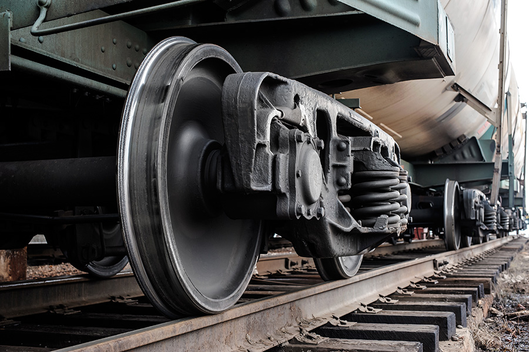

Cégünkről

Cégünk, a Train Wheel Maintenance Hungary Zrt. az országban már több mint 50 éve jelenlévő stabil hátterű vállalat, a MÁV Zrt.-vel szoros együttműködésben működik.
Kizárólagos szerződéssel rendelkezünk a Magyarországi vasúti kocsik kerekeinek karbantartására, így cégünk jövője is biztosított.

Küldetésünk
Célunk, hogy a magyarországi vasúti közlekedés gördülékenyen és biztonságosan működjön nap mint nap. Ennek érdekében a legmodernebb technológiákat alkalmazzuk a karbantartási folyamatok során, biztosítva ezzel a maximális hatékonyságot és megbízhatóságot. Hiszünk abban, hogy a jól karbantartott vonatkerekek alapvető fontosságúak a közlekedés biztonságának megőrzésében.

Innováció és fejlődés
A Train Wheel Maintenance Hungary Zrt. folyamatosan törekszik a megújulásra és a technológiai fejlődésre. Karbantartási részlegünk a legújabb műszerekkel és gépekkel van felszerelve, hogy a munkatársaink mindig a legjobb minőséget tudják biztosítani. Emellett nagy hangsúlyt fektetünk a környezetbarát megoldásokra és az energiatakarékos működésre.

Szakértő csapat
Munkatársaink magasan képzett szakemberek, akik több éves tapasztalattal rendelkeznek a vasúti iparban. Csapatunk elkötelezett a precíz és minőségi munkavégzés mellett, hogy ügyfeleink mindig a legjobb szolgáltatást kapják. Fontosnak tartjuk a folyamatos képzést és fejlődést, ezért kollégáink rendszeresen részt vesznek szakmai tréningeken és továbbképzéseken.
Társadalmi felelősségvállalás
Cégünk számára kiemelten fontos a társadalmi szerepvállalás is. Aktívan támogatjuk a helyi közösségeket, és részt veszünk különböző jótékonysági programokban. Fontosnak tartjuk, hogy tevékenységünk ne csak a gazdasági, hanem a társadalmi fejlődést is előmozdítsa.
Csatlakozzon Ön is csapatunkhoz, és vegyen részt a magyar vasúti közlekedés biztonságának megőrzésében egy stabil és jövőorientált vállalatnál!